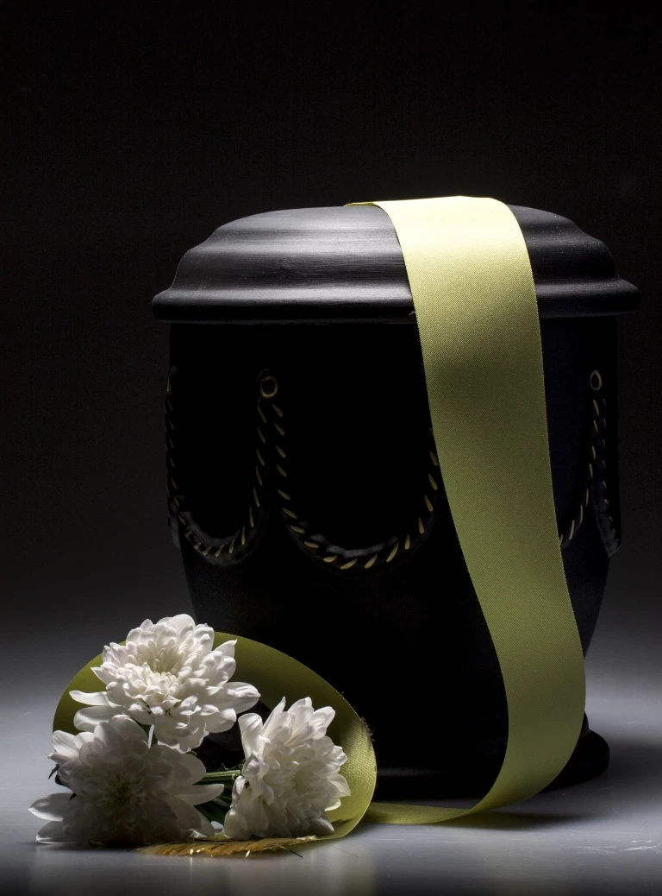

Kremacja zwłok — Gdynia, Gdańsk
Kompleksowa usługa kremacji we współpracy z krematoriami w pobliżu Gdyni i Gdańska.
Nasz zakład pogrzebowy oferuje Państwu nie tylko tradycyjny pochówek, ale również kremację zwłok. Jest to coraz częściej wybierana opcja będąca alternatywą dla chowania ciała w trumnie na cmentarzu. Po dostarczeniu przez Państwa aktu zgonu i zgody na wykonanie kremacji ciała zajmujemy się transportem zmarłego, przygotowaniem zwłok oraz spopieleniem i finalnym pochówkiem w wybranym miejscu.
Jak wygląda spopielenie zwłok?
Spopielenie zwłok to nic innego jak spalenie ciała. Przeprowadzane jest ono w ściśle określonych warunkach, a przede wszystkim z należytym szacunkiem do osoby zmarłej. Do kremacji wykorzystywane są specjalne piece krematoryjne, w których uzyskuje się temperaturę do 1200 °C. Cały proces spalania ciała trwa około 3 godziny. Po zakończeniu procedury prochy zmarłej osoby umieszcza się w wybranej przez Państwa urnie. Na specjalne życzenie umieszczamy w urnie rzeczy osobiste zmarłego, takie jak zegarek, obrączka czy różaniec.
Kremacja przeprowadzana jest zazwyczaj dwuetapowo. Rodzina zwykle życzy sobie tradycyjnego wystawienia ciała w kaplicy przy zakładzie pogrzebowym, aby bliscy i przyjaciele zmarłego mogli zobaczyć go po raz ostatni i się z nim pożegnać. Następnie ciało przewożone jest do krematorium, w którym dokonuje się jego spalenia, a prochy zmarłego są odpowiednio przygotowywane i umieszczane w urnie.
Ile trwa kremacja zwłok?
Czas ten może się nieznacznie różnić w zależności od parametrów pieca oraz masy ciała zmarłej osoby. Sam proces spopielenia ciała w piecu krematoryjnym zajmuje zazwyczaj od dwóch do trzech godzin. Warto pamiętać, że do ogólnego czasu trwania kremacji należy doliczyć również etapy poprzedzające samą procedurę – m.in. transport, przygotowanie zwłok oraz formalności administracyjne.
Ile kosztuje kremacja zwłok?
Proces ten jest dużo tańszy od pogrzebu zmarłego w tradycyjnej trumnie, stąd też często decyzja o spopieleniu zwłok podejmowana jest ze względów ekonomicznych. Koszt zależny jest od kilku podstawowych czynników:
- miejsca pochówku — prochy mogą zostać złożone w grobie lub w kolumbarium;
- urny — ich ceny są zależne m.in. od tworzywa oraz wyglądu;
- przygotowania ciała do kremacji — uwzględniające m.in. transport zmarłego.
Nie da się jednoznacznie odpowiedzieć na pytanie „Ile kosztuje kremacja ciała?". Finalna cena może się różnić w zależności od regionu, a także zakresu usług, dlatego najlepiej skontaktować się z nami, abyśmy mogli przedstawić wycenę dopasowaną do Państwa indywidualnych potrzeb.
Dokumenty wymagane przed kremacją
Aby dokonać spopielenia zwłok, należy dostarczyć zezwolenie na kremację (wydane przez najbliższego członka rodziny) oraz odpis aktu zgonu. Wszystkim Klientom korzystającym z naszych usług pomagamy skompletować potrzebną dokumentację. Zajmujemy się wszystkimi formalnościami oraz organizacją kremacji. Nasze usługi pogrzebowe realizujemy na terenie Gdyni, Gdańska oraz Sopotu.
Czy kremacja ciała jest dozwolona przez Kościół katolicki?
Przez długi czas Kościół katolicki sprzeciwiał się kremacji ciała. Zmieniło się to jednak w połowie XX wieku. W 1963 roku ukazała się Instrukcja Świętego Oficjum, która zezwoliła na kremację zwłok. Od 1997 roku Kościół katolicki zezwala także na odprawienie liturgii pogrzebowej w obecności skremowanego ciała. Jednocześnie zaleca, by obrzędy pogrzebowe z mszą i ostatnim pożegnaniem odbywały się przed kremacją, oraz precyzuje, że preferowaną formą pochówku nadal jest ta tradycyjna.
Kościół katolicki dopuszcza kremację pod warunkiem, że nie została ona wybrana z powodów sprzecznych z nauką chrześcijańską. Jednocześnie Kościół sprzeciwia się przechowywaniu prochów w domu, dzieleniu ich pomiędzy członków rodziny, wykonywaniu z nich przedmiotów oraz rozsypywaniu ich.
Dlaczego kremacja zwłok staje się coraz popularniejsza?
W ostatnich latach można zauważyć znaczny wzrost popularności spopielania zwłok w Polsce – według danych Instytutu Branży Pogrzebowej i Cmentarnej stanowią one około 40% wszystkich pochówków. Pierwszą i najważniejszą przyczyną są względy ekonomiczne – kremacja jest z reguły dużo tańsza od tradycyjnego pochówku w trumnie i zwykle mieści się w kwocie zasiłku pogrzebowego z ZUS (7000 zł).
Kremacja pozwala także na zachowanie odpowiednich warunków higienicznych. Jest też coraz przychylniej postrzegana przez Kościół katolicki — wynika to m.in. z problemów z pozyskiwaniem nowych terenów pod cmentarze, a chowanie zwłok w urnie pozwala zwiększyć pojemność nekropolii.